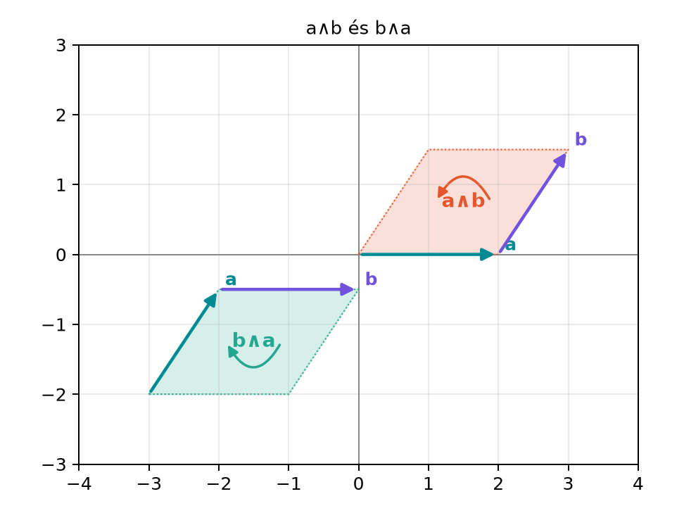

A [Irányított szakasztól az irányított területig:
a bivektor] alfejezetben láttuk, hogy két nem párhuzamos vektorhoz
egy irányított terület, bivektor tartozik. A kérdés most az: hogyan
számolhatunk ezekkel az irányított területekkel anélkül, hogy minden
lépésben újra lerajzolnánk a paralelogrammát? Olyan algebrai szabályokra
van szükség, amelyek a terület nagyságát és a körüljárás irányát
egyszerre kezelik. Különösen fontos, hogy mi történik, ha a két vektort
felcseréljük: a terület nagysága nyilvánvalóan nem változik, de az
irányítás megfordul. Ezt a jelenséget kódolja az antikommutativitás.
3.2.2 Szemléletes kép
Tekintsük az
és
vektorokat. Az
irányított terület a kiindulási paralelogramma, pozitív körüljárással:
az
vektorból a
vektor felé haladunk. A
ugyanazt a paralelogrammát jelöli, de a körüljárás iránya
ellentétes.

a∧b és b∧a - A két irányított síkdarab
azonos nagyságú, de ellentétes körüljárású.
Az ábrán a második síkdarabot eltoltuk, hogy ne fedje az elsőt, de a
geometriai tartalom ugyanaz: a két bivektor egymás negatívja.
3.2.3 Definíció: a külső szorzat
alaptörvényei
Most formálisan is rögzítjük azokat a szabályokat, amelyekre a
további számolások épülnek.
Definíció. Legyenek
vektorok és
valós skalár. A külső szorzat alaptörvényei:
Antikommutativitás:
.
Ön-ék:
.
Bal oldali disztributivitás:
.
Jobb oldali disztributivitás:
.
Skalár kiemelése:
.
A 2. szabály valójában következik az 1.-ből, hiszen
,
amiből
,
tehát
.
Mégis érdemes külön kimondani, mert a gyakorlati egyszerűsítésekben így
jelenik meg.
Továbbvitt eredmény. Az antikommutativitást
használjuk később a Motiváció: ab = a·b + a∧b
alfejezetben, ahol a geometriai szorzatot vezetjük be, valamint az Ortonormált bázis és a szorzótábla alfejezetben a
bázisvektorok szorzatainak felírásakor.
3.2.4 Geometriai indoklás
Az antikommutativitás geometriai jelentése: ha a két kifeszítő vektor
sorrendjét felcseréljük, a paralelogramma körüljárása megfordul, ezért
az irányított terület előjelet vált. A nagyság ugyanaz, mert ugyanaz a
paralelogramma.
Az ön-ék szabály azt fejezi ki, hogy egy vektor önmagával elfajult
paralelogrammát feszít ki: nincs két különböző irány, a terület
nulla.
A disztributivitás szemléletesen a nyírásos átdarabolással érthető
meg. Ha a
vektort az
vektorral szorozzuk, akkor a két paralelogramma területét külön-külön
összegezhetjük. Ez azért érvényes, mert az
-ra
merőleges magasságok összeadódnak, az alap közös. A skalár kiemelése
pedig azt mondja, hogy ha az egyik oldalvektort
-szorosára
nyújtjuk, a terület is
-szorosára
változik.
A nyírás invarianciáját pontosan is megfogalmazzuk.
Tétel. (A nyírás nem változtat területet.) Bármely
valós számra
Bizonyítás. Használjuk a disztributivitást, majd a
skalár kiemelését és az ön-ék szabályt:
Geometriailag ez azt jelenti: ha a
vektorhoz hozzáadunk egy
irányú komponenst, a paralelogramma
oldala és a hozzá tartozó magassága változatlan marad, tehát a terület
sem változik. Ez a síkgeometriai nyírás (shear) jelensége.
3.2.5 Párhuzamossági teszt
A külső szorzat nullává válása fontos információt hordoz.
Tétel. (Párhuzamossági teszt.) Legyenek
és
vektorok. Ekkor
Bizonyítás. Először tegyük fel, hogy
valamilyen
skalárra. Ekkor
Megfordítva: ha
,
akkor az irányított terület nulla, tehát a két vektor nem feszíthet ki
valódi, két dimenziós paralelogrammát. Mivel egyik vektor sem
nullvektor, ez csak úgy lehetséges, ha ugyanabba az egyenesbe esnek,
tehát párhuzamosak. A formális koordinátás bizonyítást a Külső szorzat koordinátákkal és a 2×2 determináns
alfejezetben adjuk meg, ahol a
-es
determináns nullával való egyenlőségét látjuk be.
Számítsuk ki az alábbi kifejezést a szabályok segítségével:
Itt
és
a sík két ortonormált bázisvektora. A disztributivitást jobbról
alkalmazva:
A skalár kiemelése után:
Az ön-ék szabály miatt
,
így
Az eredmény
,
azaz az egységnégyzet irányított területének kétszerese, pozitív
körüljárással. Ha a sorrendet felcseréljük, például
,
az előjel megfordul.
3.2.7 Ellentmondás-ellenőrzés
A szabályok konzisztenciáját az alábbi módon is ellenőrizhetjük. Ha
az antikommutativitást az
esetre alkalmazzuk, akkor
Mindkét oldalhoz hozzáadva
-t:
amiből valós számok felett
következik. Tehát a 2. szabály nem mond ellent az 1.-nek, hanem éppen
annak speciális esete. A disztributivitás és a skalár kiemelése szintén
összhangban van, mert a terület additivitását és linearitását
tükrözik.
3.2.8 Tipikus hibák és
félreértések
Az antikommutativitás elfelejtése. Gyakori hiba,
hogy valaki azt írja:
.
Ez nem igaz: a sorrendcsere előjelváltással jár.
A skalár kiemelésekor a sorrend felcserélése. Ha
például
-t
számolunk, a
-t
kiemelhetjük, de az
sorrendet meg kell tartani. Ha valaki
-t
ír, az nem egyenlő az eredeti kifejezéssel, mert
.
Az ön-ék szabály túláltalánosítása. Az
csak ugyanarra a vektorra vonatkozik; két különböző, de párhuzamos
vektorra
a párhuzamossági teszt szerint igaz. A disztributivitásnál a
kereszttagokat nem szabad elhagyni.
3.2.9 Feladatok
Fogalmi kérdés. Mi a geometriai jelentése az
azonosságnak? Miért nulla
?
Kézi számolás. Számítsd ki az alábbi kifejezést a
külső szorzat szabályaival, minden lépést kiírva:
Bizonyítási feladat. Indokold meg szemléletesen,
hogy ha
és
,
akkor
párhuzamos
-val.
Alkalmazási feladat. Adottak az
és
vektorok. Számítsd ki
-t
és
-t,
és ellenőrizd az antikommutativitást.
3.2.10 Megoldások
Az antikommutativitás azt jelenti, hogy a paralelogramma
körüljárásának iránya megfordul, a terület nagysága azonban változatlan.
Az
azért igaz, mert egy vektor önmagával nem feszít ki két dimenziós
területet.
Lépésenként, először a bal oldali vektort bontjuk ki:
Most külön-külön:
Összeadva:
Ha
,
akkor nincs irányított terület, tehát a két vektor nem feszít ki valódi
paralelogrammát. Mivel
nem nullvektor, a
vektornak ugyanabba az egyenesbe kell esnie, mint
-nak,
azaz
valamilyen
skalárra. Ez éppen a párhuzamosság.
Először
:
Az ön-ék szabály miatt az első és az utolsó tag nulla, a harmadik tag
,
így:
Most
:
Az első és utolsó tag nulla, a harmadik
,
tehát:
Valóban
.